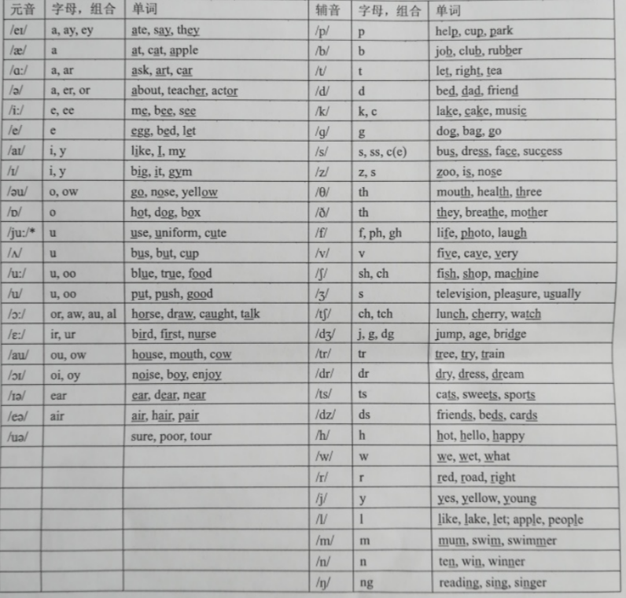

国际音标表
48个国际音标中有20个元音、28个辅音，便于随时复习，
点击音标即可发音.
元音
单元音
前元音
/i/
/ɪː/
/e/
/æ/
中元音
/ɜː/
/ə/
/ʌ/
后元音
/uː/
/ʊ/
/ɔː/
/ɒ/
/ɑː/
双元音
开合双元音
/eɪ/
/aɪ/
/ɔɪ/
/aʊ/
/əʊ/
集中双元音
/ɪə/
/eə/
/ʊə/
辅音
爆破音
清辅音
/p/
/t/
/k/
浊辅音
/b/
/d/
/ɡ/
摩擦音
清辅音
/f/
/s/
/ʃ/
/θ/
/h/
浊辅音
/v/
/z/
/ʒ/
/ð/
/r/
破擦音
清辅音
/tʃ/
/tr/
/ts/
浊辅音
/dʒ/
/dr/
/dz/
鼻音
（浊辅音）
/m/
/n/
/ŋ/
舌则音
（浊辅音）
/l/
半元音
（浊辅音）
/j/
/w/
